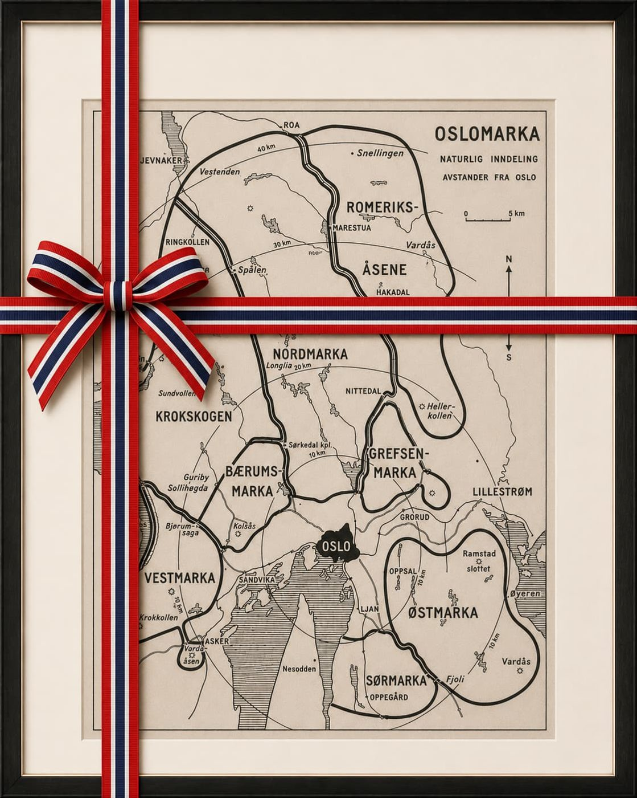
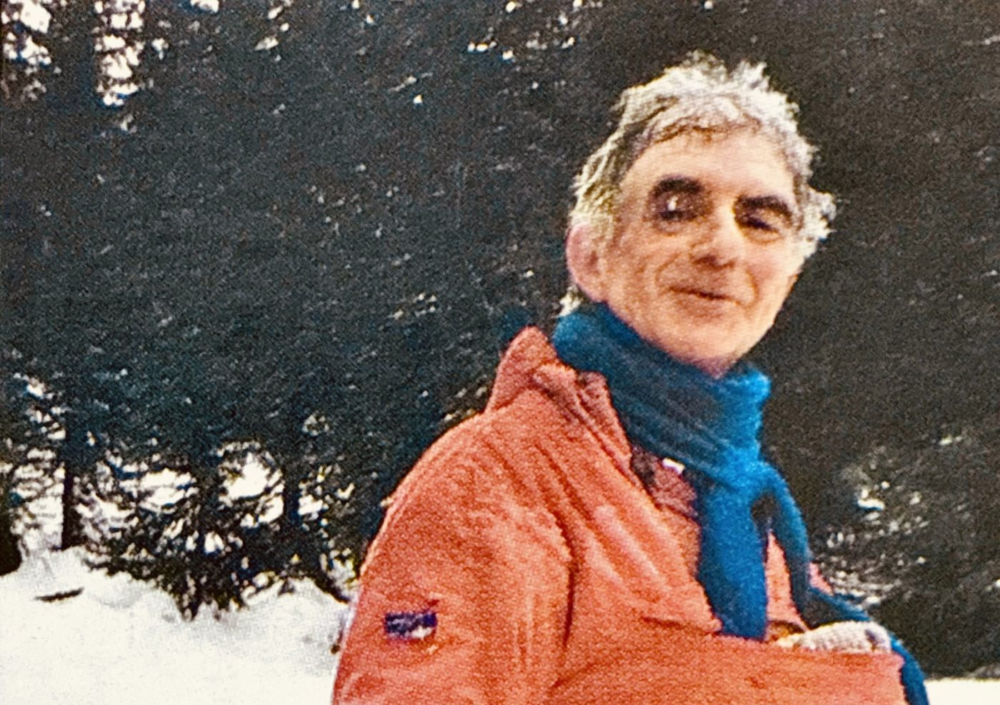
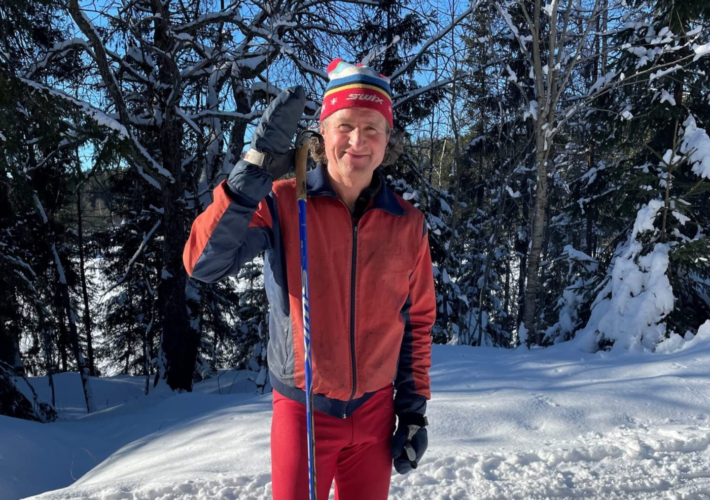
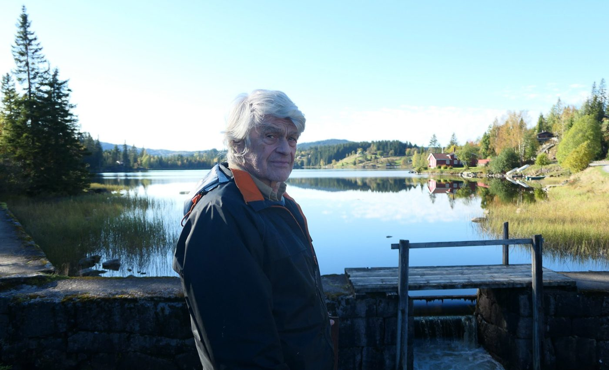

Artikler
Historisk arkiv med tidligere publiserte artikler: portretter, intervjuer, turskildringer og minneord fra Oslomarka.
Ingen artikler i denne kategorien ennå.

Ernst Bjerknes – ingeniøren som tegnet verdens første skikart
Ernst Bjerknes var en allsidig og viljesterk mann som satte spor etter seg på mange områder. Gjennom et langt liv satte han spor i Nordmarka, Kristiania og en rekke andre steder i Norge.
2026
12 artikler
På vandring i Oslomarka i 1951
Tenk å kunne reise tilbake i tid – til Oslomarka for omtrent 75 år siden. Oppleve våren, høre fuglesangen, lytte til fisken som vaker – og ikke minst møte…Tenk å kunne reise tilbake i tid – til Oslomarka for omtrent 75 år siden. Oppleve våren, høre fuglesangen, lytte til fisken som vaker – og ikke…

Nils Houge – Markagrensens arkitekt og adjutant
Det er 33 år siden Nils Houge gikk bort. Houge var en visjonær naturverner, en mann med et strategisk og langsiktig perspektiv. Han skrev og publiserte…Det er 33 år siden Nils Houge gikk bort. Houge var en visjonær naturverner, en mann med et strategisk og langsiktig perspektiv. Han skrev o…

Nordmarkas eneste klosterhage
Allemannsretten er mer enn felleseie. Ofte er den et ensomt forhold mellom enkeltmennesker og små naturperler. Les mer på Heikampen.no

Familien på Katnosa
I boken «Fra Mork i Hakadal og Ask i Gjerdrum til Katnosa» forteller Bjørn Katnosa (1947) om familiens historie gjennom generasjoner – en vandring fra…I boken «Fra Mork i Hakadal og Ask i Gjerdrum til Katnosa» forteller Bjørn Katnosa (1947) om familiens historie gjennom generasjoner – en…

Solan Gundersen på Rustadsaga
Aukust-figuren Solan Gundersen hadde tittelen sagbruksarbeider. Arbeidsplassen var Rustadsaga. Les historien bak hos Heikampen.no

Korpås-Olsen: Eneboer og preparant i Østmarka
Olaf Olsen (1874-1952) gikk under navnet Korpås-Olsen og hadde sin anonyme tilværelse ikke mange hundre meter fra der mengder av hovedstadens turfolk nå…Olaf Olsen (1874-1952) gikk under navnet Korpås-Olsen og hadde sin anonyme tilværelse ikke mange hundre meter fra der mengder av…

Mix-klubben
For hundre år siden ble det sagt at det var lettere å vinne OL-gull på ski, enn å vinne klubbmesterskapet i Mix-klubben. Her kan du lese om Mix og alle de meriterte…For hundre år siden ble det sagt at det var lettere å vinne OL-gull på ski, enn å vinne klubbmesterskapet i Mix-klubben. Her kan du…

De små Østmarkbøkene
I første halvdel av 1900-tallet kom det ut en rekke bøker med stoff hentet fra friluftsliv, jakt og fiske. Mange av forfatterne hadde Østmarka som turarena, og bøkene…I første halvdel av 1900-tallet kom det ut en rekke bøker med stoff hentet fra friluftsliv, jakt og fiske. Mange av forfatterne hadde Østmarka som…

Sju menn på ski frå Skumsjøen til Sognsvann
Jan Erik Vold (1939) er lyriker med et enestående forfatterskap. Trygve Åslund (1952) er tidligere forlagssjef med en sterk publisistisk liste. Begge er…Jan Erik Vold (1939) er lyriker med et enestående forfatterskap. Trygve Åslund (1952) er tidligere forlagssjef med en sterk publisistisk liste. Begge…

Minneord om Trond Burud
Skogsmannen Trond Burud har gått sin siste tur. Mange kjenner til Tronds to små, men meget innholdsrike, bøker om Rausjø-/Børtervannområdet i Østmarka. «Opplev…Skogsmannen Trond Burud har gått sin siste tur. Mange kjenner til Tronds to små, men meget innholdsrike, bøker om…

Minneord om Sverre Grimstad
Sverre Grimstad (1942 – 2025) må være den mannen som har skrevet flest bøker med tema Nordmarka. Nå har markaentusiasten gått sin siste tur. Sverre døde 29.…Sverre Grimstad (1942 – 2025) må være den mannen som har skrevet flest bøker med tema Nordmarka. Nå har markaentusiasten gått sin…

Den fine runden
Thor Gotaas (1965) er en energirik nasjonalskatt fra Brumunddal. Han har over 25 deltakelser i Birken, alle med merke og litt bakglatte ski. Artikkelen Den fine…Thor Gotaas (1965) er en energirik nasjonalskatt fra Brumunddal. Han har over 25 deltakelser i Birken, alle med merke og litt bakglatte ski.…
2025
2 artikler
En juleaften på Krokskogen
Eva Huseby har skrevet en rekke fortellinger og beretninger om livet i Nordmarka. Alle med innsikt, nærhet og varme. En julaften på Krokskogen er en av…Eva Huseby har skrevet en rekke fortellinger og beretninger om livet i Nordmarka. Alle med innsikt, nærhet og varme. En julaften på…

Intervju med Bjørn Smith-Simonsen
Intervju med Bjørn Smith-Simonsen. "Oslomarka på kryss og tvers." Tekst og foto: Eva Huseby. Bjørn Smith-Simonsen (1946) elsker kona Tone, Oslomarka, bøker o…Intervju med Bjørn Smith-Simonsen. "Oslomarka på kryss og tvers." Tekst og foto: Eva Huseby. Bjørn Smith-Simonsen (1946) elsker kona Tone,…